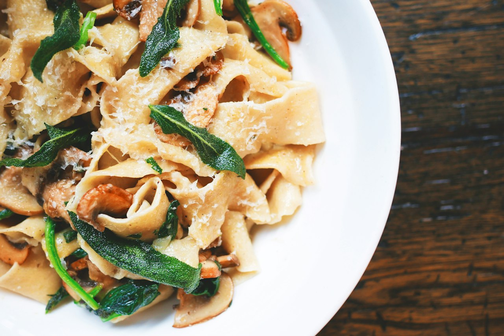

Creamed Spinach Saag Pasta
Italian-Indian-Southern fusion: Brami protein spaghetti folded into a creamed-spinach saag-style sauce built on a full pound of spinach, a whole head of garlic, cottage cheese, parmesan, and kasoori methi. Creamed-spinach richness meets saag spice on a high-fiber lupini base.
Italian · Indian · Pasta · Vegetarian · High Protein · Dinner

340kcal
17gprotein
Makes 5 servings. Whole batch: 1700 kcal, 83g protein.
Ingredients
Steps
- Cook onions in the oil and butter over medium until soft and lightly golden.
- Add garlic and ginger garlic paste; cook 1-2 min until fragrant.
- Add spinach in batches, wilting it down. Season with the Italian and Indian spices.
- Add broth and simmer briefly to meld. Blend smooth with an immersion blender for a saag-style sauce, or leave rustic.
- Off high heat, stir in the blended cottage cheese and 10g parmesan so it stays creamy and doesn't split.
- Fold in the cooked Brami and toss to coat, loosening with a splash more broth if needed.
- Finish with crushed kasoori methi and the remaining 5g parmesan on the plate.
Fusion of creamed spinach, Indian saag, and Italian pasta. Full pot ~1,700 cal / ~83g protein / ~34g fiber - Brami and the full pound of spinach drive the fiber. Vegetarian as written; folds in shredded chicken beautifully for a protein bump. Kasoori methi is what pushes it from creamed-spinach pasta toward saag - don't skip it. Blend the cottage cheese smooth before adding so it melts like cream instead of going curdy.